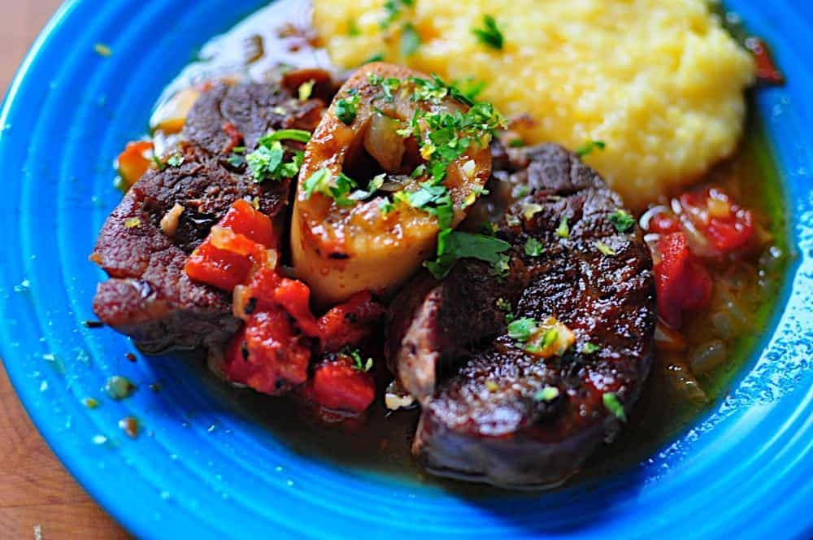

Osso Bucco

Description
Big rounds of shank meat, mixed with herbs and citrus flavor. It's perfect!
Ingredients
- 1 teaspoon vegetable oil
- 6 thick beef shank slices (1 ½ to 2 inches thick), about 3 pounds
- 3 teaspoons Diamond Crystal kosher salt
- 1 ½ teaspoon fresh ground black pepper
- 1 large onion, diced
- 1 stalk celery, diced
- 1 carrot, diced
- 4 cloves garlic, crushed
- 1 tablespoon tomato paste
- 2 sprigs thyme (or 1 teaspoon dried thyme)
- ½ teaspoon kosher salt
- 1 cup chicken stock (preferably homemade)
- ½ cup dry white wine
- 15 oz can diced tomatoes
Gremolata
- 1 clove garlic, minced
- zest of 1 lemon
- 1 cup parsley leaves
Steps
- Season and sear the shanks in two batches: Trim all the fat you can from the outside of the beef shanks, then (optionally) tie with twine to hold them together. Season the shanks with 3 teaspoons salt and 1 ½ teaspoon pepper. Heat 1 teaspoon of vegetable oil over medium-high heat in the pressure cooker pot until shimmering. Add half the shanks, and sear for 3 minutes per side, or until well browned. Remove the browned shanks to a bowl. Add the second half of the shanks to the pot, and sear for 3 minutes per side. Move the second batch into to the bowl. Pour off all but 1 tablespoon of the oil and fat in the cooker.
- Saute the aromatics: Add the onion, celery, carrot, garlic, tomato paste, and thyme to the pot. Sprinkle with ½ teaspoon salt. Saute for five minutes, or until the onions are softened. Add the chicken stock and wine to the pot, increase the heat to high, and scrape the bottom of the pot to loosen any browned bits from the bottom.
- Pressure cook the shanks: Add the shanks and any liquid in their bowl back into the pot. Submerge the shanks in the liquid as much as possible. Pour the tomatoes on top, but don't stir. Lock the lid on the pressure cooker, bring the pressure cooker up to high pressure, then cook at high pressure for 30 minutes in a stovetop PC, 36 minutes in an electric PC. Remove from the heat, allow the pressure to come down naturally for 15 minutes, then quick release any pressure left in the pot.
- Prepare the gremolata: While the shanks are cooking, make the gremolata. Mince the garlic, lemon zest, and parsley leaves together, then toss in a small bowl to combine.
- Prepare the sauce: Remove the shanks to a serving platter. Pour the sauce into a fat separator, let it rest for ten minutes for the fat to surface, then pour into a serving boat. To serve, put a shank on the plate, pour some sauce over the top, then sprinkle a little gremloata on top.